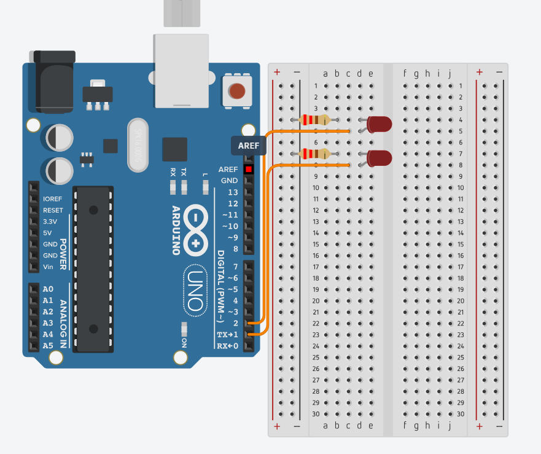

Keimo Asjade Internet ja robootika
Koduõppe nädal Servo 360 mootor kontroll nuppude abil
Tinkercad:

Tinkercad link
#include <Servo.h> // Lisame Servo teegi, et saaks mootorit juhtida
const int BUTTON1_PIN = 6; // Nupp 1 (päripäeva)
const int BUTTON2_PIN = 7; // Nupp 2 (vastupäeva)
const int SERVO_PIN = 9; // Servo mootor on ühendatud pordiga 9
Servo servo;
int lastButton1State;
int lastButton2State;
int currentButton1State;
int currentButton2State;
void setup() {
Serial.begin(9600); // Serialühendus, et saaksime Serial Monitori kasutada
pinMode(BUTTON1_PIN, INPUT_PULLUP);
pinMode(BUTTON2_PIN, INPUT_PULLUP);
servo.attach(SERVO_PIN); // Ühendame servo pordiga
// Loeme esialgse nupuseisu
currentButton1State = digitalRead(BUTTON1_PIN);
currentButton2State = digitalRead(BUTTON2_PIN);
}
void loop() {
// Salvestame eelmise ja loeme uue nupu 1 seisu
lastButton1State = currentButton1State;
currentButton1State = digitalRead(BUTTON1_PIN);
// Salvestame eelmise ja loeme uue nupu 2 seisu
lastButton2State = currentButton2State;
currentButton2State = digitalRead(BUTTON2_PIN);
// Kui nupp 1 vajutatakse (päripäeva)
if (lastButton1State == HIGH && currentButton1State == LOW) {
Serial.println("Paripaeva 360 kraadi");
servo.write(0); // Täiskiirus päripäeva (0)
delay(1000); // Ootame umbes 1 sekund (360° pöörde aeg)
servo.write(90); // Peatame mootori
}
// Kui nupp 2 vajutatakse (vastupäeva)
if (lastButton2State == HIGH && currentButton2State == LOW) {
Serial.println("Vastupaeva 360 kraadi");
servo.write(180); // Vastupäeva (180)
delay(1000); // Ootame umbes 1 sekund (360° pöörde aeg)
servo.write(90); // Peatame mootori
}
}
Allikad:
Projekti alus: https://arduinogetstarted.com/tutorials/arduino-button-servo-motor
Koodi arengu autor: Keimo Plaas ™©
Keimo Plaas Ülesanded: 6, 5, 4, 16, 15, 14, 26, 25, 24
Saan läbi Serial Monitor konsooli lülitada valgust sisse-välja. - Ül 6
Tinkercad link
int ledPin = 13;
String inputString = "";
void setup() {
pinMode(ledPin, OUTPUT);
Serial.begin(9600);
Serial.println("Sisesta 'on' voi 'off' ja vajuta Enter:");
}
void loop() {
if (Serial.available()) {
inputString = Serial.readStringUntil('\n');
inputString.trim();
if (inputString.equalsIgnoreCase("on")) {
digitalWrite(ledPin, HIGH);
Serial.println("LED on sisse lulitatud.");
}
else if (inputString.equalsIgnoreCase("off")) {
digitalWrite(ledPin, LOW);
Serial.println("LED on valja lulitatud.");
}
else {
Serial.println("Tundmatu kask. Kasuta 'on' voi 'off'.");
}
}
}
LED’id kuvavad helitugevust (1 led nõrk->3 led’i vali) - Ül 5

Tinkercad link
int micPin = A0;
int led1 = 2;
int led2 = 3;
int led3 = 4;
void setup() {
pinMode(led1, OUTPUT);
pinMode(led2, OUTPUT);
pinMode(led3, OUTPUT);
Serial.begin(9600);
}
void loop() {
int micValue = analogRead(micPin);
Serial.println(micValue);
if (micValue < 200) {
digitalWrite(led1, HIGH);
digitalWrite(led2, LOW);
digitalWrite(led3, LOW);
} else if (micValue < 400) {
digitalWrite(led1, HIGH);
digitalWrite(led2, HIGH);
digitalWrite(led3, LOW);
} else {
digitalWrite(led1, HIGH);
digitalWrite(led2, HIGH);
digitalWrite(led3, HIGH);
}
delay(100);
}
Tuled süttivad, kui läheb pimedaks. Väljasta Serial Monitorile tekst, kas on pime või valge - Ül 4
Tinkercad link
int ldrPin = A0;
int ledPin = 2;
int threshold = 500;
void setup() {
pinMode(ledPin, OUTPUT);
Serial.begin(9600);
}
void loop() {
int ldrValue = analogRead(ldrPin);
Serial.print("LDR vaartus: ");
Serial.println(ldrValue);
Serial.println(analogRead(ldrPin));
//if (ldrValue < threshold) {
// digitalWrite(ledPin, HIGH);
// Serial.println("Pime");
//} else {
// digitalWrite(ledPin, LOW);
// Serial.println("Valge");
//}
delay(500);
}
LCD ekraanil kuvatakse mootori kiirus või suund. - Ül 16
Tinkercad:
Tinkercad link
#include
const int rs = 12, en = 11, d4 = 5, d5 = 4, d6 = 3, d7 = 2;
LiquidCrystal lcd(rs, en, d4, d5, d6, d7);
const int dir1Pin = 10;
const int dir2Pin = 9;
const int enablePin = 6;
const int butPin1 = 7;
const int butPin2 = 8;
int cauntA = 0;
int cauntB = 0;
bool aFlag = false;
bool bFlag = false;
int mapVal = 0;
const int fromLow = 0;
const int fromHigh = 255;
const int toLow = 0;
const int toHigh = 16530;
void setup() {
pinMode(dir1Pin, OUTPUT);
pinMode(dir2Pin, OUTPUT);
pinMode(enablePin, OUTPUT);
pinMode(butPin1, INPUT_PULLUP);
pinMode(butPin2, INPUT_PULLUP);
lcd.begin(16, 2);
lcd.print("DC Motor RPM +/-");
Serial.begin(9600);
}
void loop() {
if (cauntA == 0 && cauntB == 0) {
aFlag = false;
bFlag = false;
}
while (aFlag == false && bFlag == false) {
digitalWrite(dir1Pin, LOW);
digitalWrite(dir2Pin, LOW);
analogWrite(enablePin, 0);
if (digitalRead(butPin1) == LOW) {
aFlag = true;
cauntA += 5;
if (cauntA > 255) cauntA = 255;
digitalWrite(dir1Pin, HIGH);
digitalWrite(dir2Pin, LOW);
analogWrite(enablePin, cauntA);
mapVal = map(cauntA, fromLow, fromHigh, toLow, toHigh);
lcd.setCursor(0, 1);
lcd.print("RPM: ");
lcd.print(mapVal);
lcd.print(" ");
while (digitalRead(butPin1) == LOW);
}
if (digitalRead(butPin2) == LOW) {
bFlag = true;
cauntB += 5;
if (cauntB > 255) cauntB = 255;
digitalWrite(dir1Pin, LOW);
digitalWrite(dir2Pin, HIGH);
analogWrite(enablePin, cauntB);
mapVal = map(cauntB, fromLow, fromHigh, toLow, toHigh);
lcd.setCursor(0, 1);
lcd.print("RPM: -");
lcd.print(mapVal);
lcd.print(" ");
while (digitalRead(butPin2) == LOW);
}
}
if (aFlag == true) {
while (digitalRead(butPin1) == HIGH && digitalRead(butPin2) == HIGH); // Wait for input
if (digitalRead(butPin1) == LOW) {
cauntA += 5;
if (cauntA > 255) cauntA = 255;
digitalWrite(dir1Pin, HIGH);
digitalWrite(dir2Pin, LOW);
analogWrite(enablePin, cauntA);
mapVal = map(cauntA, fromLow, fromHigh, toLow, toHigh);
lcd.setCursor(0, 1);
lcd.print("RPM: ");
lcd.print(mapVal);
lcd.print(" ");
while (digitalRead(butPin1) == LOW);
}
if (digitalRead(butPin2) == LOW) {
cauntA -= 5;
if (cauntA < 0) cauntA = 0;
digitalWrite(dir1Pin, HIGH);
digitalWrite(dir2Pin, LOW);
analogWrite(enablePin, cauntA);
lcd.clear();
lcd.print("DC Motor RPM +/-");
mapVal = map(cauntA, fromLow, fromHigh, toLow, toHigh);
lcd.setCursor(0, 1);
lcd.print("RPM: ");
lcd.print(mapVal);
lcd.print(" ");
while (digitalRead(butPin2) == LOW);
if (cauntA == 0) {
aFlag = false;
}
}
}
if (bFlag == true) {
while (digitalRead(butPin1) == HIGH && digitalRead(butPin2) == HIGH); // Wait for input
if (digitalRead(butPin2) == LOW) {
cauntB += 5;
if (cauntB > 255) cauntB = 255;
digitalWrite(dir1Pin, LOW);
digitalWrite(dir2Pin, HIGH);
analogWrite(enablePin, cauntB);
mapVal = map(cauntB, fromLow, fromHigh, toLow, toHigh);
lcd.setCursor(0, 1);
lcd.print("RPM: -");
lcd.print(mapVal);
lcd.print(" ");
while (digitalRead(butPin2) == LOW);
}
if (digitalRead(butPin1) == LOW) {
cauntB -= 5;
if (cauntB < 0) cauntB = 0;
digitalWrite(dir1Pin, LOW);
digitalWrite(dir2Pin, HIGH);
analogWrite(enablePin, cauntB);
lcd.clear();
lcd.print("DC Motor RPM +/-");
mapVal = map(cauntB, fromLow, fromHigh, toLow, toHigh);
lcd.setCursor(0, 1);
lcd.print("RPM: -");
lcd.print(mapVal);
lcd.print(" ");
while (digitalRead(butPin1) == LOW);
if (cauntB == 0) {
bFlag = false;
}
}
}
}
Arduino mängib laulu “Super Mario” ja vilgutab tulesid. Kuva info ka Serial Monitoris - Ül 15
Tinkercad:
Tinkercad link
// --- Notes definition ---
#define NOTE_B0 31
#define NOTE_C1 33
#define NOTE_CS1 35
#define NOTE_D1 37
#define NOTE_DS1 39
#define NOTE_E1 41
#define NOTE_F1 44
#define NOTE_FS1 46
#define NOTE_G1 49
#define NOTE_GS1 52
#define NOTE_A1 55
#define NOTE_AS1 58
#define NOTE_B1 62
#define NOTE_C2 65
#define NOTE_CS2 69
#define NOTE_D2 73
#define NOTE_DS2 78
#define NOTE_E2 82
#define NOTE_F2 87
#define NOTE_FS2 93
#define NOTE_G2 98
#define NOTE_GS2 104
#define NOTE_A2 110
#define NOTE_AS2 117
#define NOTE_B2 123
#define NOTE_C3 131
#define NOTE_CS3 139
#define NOTE_D3 147
#define NOTE_DS3 156
#define NOTE_E3 165
#define NOTE_F3 175
#define NOTE_FS3 185
#define NOTE_G3 196
#define NOTE_GS3 208
#define NOTE_A3 220
#define NOTE_AS3 233
#define NOTE_B3 247
#define NOTE_C4 262
#define NOTE_CS4 277
#define NOTE_D4 294
#define NOTE_DS4 311
#define NOTE_E4 330
#define NOTE_F4 349
#define NOTE_FS4 370
#define NOTE_G4 392
#define NOTE_GS4 415
#define NOTE_A4 440
#define NOTE_AS4 466
#define NOTE_B4 494
#define NOTE_C5 523
#define NOTE_CS5 554
#define NOTE_D5 587
#define NOTE_DS5 622
#define NOTE_E5 659
#define NOTE_F5 698
#define NOTE_FS5 740
#define NOTE_G5 784
#define NOTE_GS5 831
#define NOTE_A5 880
#define NOTE_AS5 932
#define NOTE_B5 988
#define NOTE_C6 1047
#define NOTE_CS6 1109
#define NOTE_D6 1175
#define NOTE_DS6 1245
#define NOTE_E6 1319
#define NOTE_F6 1397
#define NOTE_FS6 1480
#define NOTE_G6 1568
#define NOTE_GS6 1661
#define NOTE_A6 1760
#define NOTE_AS6 1865
#define NOTE_B6 1976
#define NOTE_C7 2093
#define NOTE_CS7 2217
#define NOTE_D7 2349
#define NOTE_DS7 2489
#define NOTE_E7 2637
#define NOTE_F7 2794
#define NOTE_FS7 2960
#define NOTE_G7 3136
#define NOTE_GS7 3322
#define NOTE_A7 3520
#define NOTE_AS7 3729
#define NOTE_B7 3951
#define NOTE_C8 4186
#define NOTE_CS8 4435
#define NOTE_D8 4699
#define NOTE_DS8 4978
#define melodyPin 3
// Mario Theme Melody
int melody[] = {
NOTE_E7, NOTE_E7, 0, NOTE_E7,
0, NOTE_C7, NOTE_E7, 0,
NOTE_G7, 0, 0, 0,
NOTE_G6, 0, 0, 0,
NOTE_C7, 0, 0, NOTE_G6,
0, 0, NOTE_E6, 0,
0, NOTE_A6, 0, NOTE_B6,
0, NOTE_AS6, NOTE_A6, 0,
NOTE_G6, NOTE_E7, NOTE_G7,
NOTE_A7, 0, NOTE_F7, NOTE_G7,
0, NOTE_E7, 0, NOTE_C7,
NOTE_D7, NOTE_B6, 0, 0,
NOTE_C7, 0, 0, NOTE_G6,
0, 0, NOTE_E6, 0,
0, NOTE_A6, 0, NOTE_B6,
0, NOTE_AS6, NOTE_A6, 0,
NOTE_G6, NOTE_E7, NOTE_G7,
NOTE_A7, 0, NOTE_F7, NOTE_G7,
0, NOTE_E7, 0, NOTE_C7,
NOTE_D7, NOTE_B6, 0, 0
};
int tempo[] = {
12, 12, 12, 12,
12, 12, 12, 12,
12, 12, 12, 12,
12, 12, 12, 12,
12, 12, 12, 12,
12, 12, 12, 12,
12, 12, 12, 12,
12, 12, 12, 12,
9, 9, 9,
12, 12, 12, 12,
12, 12, 12, 12,
12, 12, 12, 12,
12, 12, 12, 12,
12, 12, 12, 12,
12, 12, 12, 12,
12, 12, 12, 12,
9, 9, 9,
12, 12, 12, 12,
12, 12, 12, 12,
12, 12, 12, 12,
};
int underworld_melody[] = {
NOTE_C4, NOTE_C5, NOTE_A3, NOTE_A4,
NOTE_AS3, NOTE_AS4, 0, 0,
NOTE_C4, NOTE_C5, NOTE_A3, NOTE_A4,
NOTE_AS3, NOTE_AS4, 0, 0,
NOTE_F3, NOTE_F4, NOTE_D3, NOTE_D4,
NOTE_DS3, NOTE_DS4, 0, 0,
NOTE_F3, NOTE_F4, NOTE_D3, NOTE_D4,
NOTE_DS3, NOTE_DS4, 0, 0,
NOTE_DS4, NOTE_CS4, NOTE_D4, NOTE_CS4, NOTE_DS4,
NOTE_DS4, NOTE_GS3, NOTE_G3, NOTE_CS4,
NOTE_C4, NOTE_FS4, NOTE_F4, NOTE_E3, NOTE_AS4, NOTE_A4,
NOTE_GS4, NOTE_DS4, NOTE_B3,
NOTE_AS3, NOTE_A3, NOTE_GS3,
0, 0, 0
};
int underworld_tempo[] = {
12, 12, 12, 12,
12, 12, 6, 3,
12, 12, 12, 12,
12, 12, 6, 3,
12, 12, 12, 12,
12, 12, 6, 3,
12, 12, 12, 12,
12, 12, 6, 6,
18, 18, 18, 6, 6,
6, 6, 6, 6,
18, 18, 18, 18, 18, 18,
10, 10, 10,
10, 10, 10,
3, 3, 3
};
int song = 0;
void setup() {
pinMode(melodyPin, OUTPUT);
pinMode(13, OUTPUT); // LED
Serial.begin(9600);
Serial.println("Super Mario Sound Player Ready!");
}
void loop() {
sing(1); // Mario Theme x2
sing(1);
sing(2); // Underworld Theme
}
void sing(int s) {
song = s;
if (song == 2) {
Serial.println("Playing: Underworld Theme");
int size = sizeof(underworld_melody) / sizeof(int);
for (int i = 0; i < size; i++) {
int note = underworld_melody[i];
int duration = 1000 / underworld_tempo[i];
Serial.print("Note: ");
Serial.println(note);
buzz(melodyPin, note, duration);
delay(duration * 1.30);
buzz(melodyPin, 0, duration);
}
} else {
Serial.println("Playing: Mario Theme");
int size = sizeof(melody) / sizeof(int);
for (int i = 0; i < size; i++) {
int note = melody[i];
int duration = 1000 / tempo[i];
Serial.print("Note: ");
Serial.println(note);
buzz(melodyPin, note, duration);
delay(duration * 1.30);
buzz(melodyPin, 0, duration);
}
}
}
void buzz(int targetPin, long frequency, long length) {
if (frequency == 0) {
delay(length);
return;
}
digitalWrite(13, HIGH);
long delayValue = 1000000 / frequency / 2;
long numCycles = frequency * length / 1000;
for (long i = 0; i < numCycles; i++) {
digitalWrite(targetPin, HIGH);
delayMicroseconds(delayValue);
digitalWrite(targetPin, LOW);
delayMicroseconds(delayValue);
}
digitalWrite(13, LOW);
}
Kontrolli potentsiomeetri abiga LED vilkumise kiirust. Kuva info ka Serial Monitoris - Ül 14
Tinkercad:
Tinkercad link
const int ledPin = 13;
const int potPin = A0;
int potValue = 0;
int blinkDelay = 0;
void setup() {
pinMode(ledPin, OUTPUT);
Serial.begin(9600);
}
void loop() {
potValue = analogRead(potPin);
blinkDelay = map(potValue, 0, 1023, 100, 1000);
Serial.print("Potentiomeeter: ");
Serial.print(potValue);
Serial.print(" | Vilkumise viivitus: ");
Serial.println(blinkDelay);
digitalWrite(ledPin, HIGH);
delay(blinkDelay);
digitalWrite(ledPin, LOW);
delay(blinkDelay);
}
- Ül 26
Tinkercad:
Tinkercad link
#include // Kui kasutad ESP8266
//#include // Kui kasutad ESP32
#include // Kui kasutad ESP8266
//#include // Kui kasutad ESP32
const char* ssid = "your_SSID"; // Wi-Fi nimi
const char* password = "your_PASSWORD"; // Wi-Fi parool
ESP8266WebServer server(80); // Serveri loomine ESP8266 jaoks (või ESP32 puhul WebServer)
const int ledPin1 = D1; // LED1 jaoks pin
const int ledPin2 = D2; // LED2 jaoks pin
void setup() {
// Alustame seeriaväljastust ja Wi-Fi ühendust
Serial.begin(115200);
WiFi.begin(ssid, password);
// Ootame, kuni Wi-Fi ühendus on loodud
while (WiFi.status() != WL_CONNECTED) {
delay(1000);
Serial.println("Ühendatakse Wi-Fi-ga...");
}
Serial.println("Ühendus loodud!");
Serial.print("IP aadress: ");
Serial.println(WiFi.localIP());
// LEDide pin'ide seadistamine
pinMode(ledPin1, OUTPUT);
pinMode(ledPin2, OUTPUT);
// Defineerime veebiserveri lingid
server.on("/", HTTP_GET, []() {
String html = "LED Kontroll
";
html += "";
html += "";
html += "";
html += "";
html += "";
server.send(200, "text/html", html);
});
server.on("/led1/on", HTTP_GET, []() {
digitalWrite(ledPin1, HIGH);
server.sendHeader("Location", "/");
server.send(303);
});
server.on("/led1/off", HTTP_GET, []() {
digitalWrite(ledPin1, LOW);
server.sendHeader("Location", "/");
server.send(303);
});
server.on("/led2/on", HTTP_GET, []() {
digitalWrite(ledPin2, HIGH);
server.sendHeader("Location", "/");
server.send(303);
});
server.on("/led2/off", HTTP_GET, []() {
digitalWrite(ledPin2, LOW);
server.sendHeader("Location", "/");
server.send(303);
});
server.begin();
}
void loop() {
server.handleClient();
}
Arduino mõõdab veetaset ja annab märku LED abil. Kuva info ka Serial Monitoris. - Ül 25
Tinkercad:
Tinkercad link
int sensorPin = A0; // Veetasemeandur (potentsiomeeter)
int ledPin = 8; // LED pin
int waterLevel = 0; // Muutuja anduri väärtuseks
int threshold = 500; // Lävi, millest alates LED süttib
void setup() {
Serial.begin(9600);
pinMode(ledPin, OUTPUT);
Serial.println("Veetaseme jälgimine alustatud...");
}
void loop() {
waterLevel = analogRead(sensorPin); // Loe veetaseme väärtus
Serial.print("Veetase: ");
Serial.println(waterLevel);
if (waterLevel > threshold) {
digitalWrite(ledPin, HIGH); // LED põlema
Serial.println("TASE KÕRGE – LED sees");
} else {
digitalWrite(ledPin, LOW); // LED kustus
Serial.println("TASE MADAL – LED väljas");
}
delay(1000); // Oota 1 sekund
}
Tutvu lasermooduliga ja pane see tööle, et see teeks midagi (NB! laser kahjustab silma). Kuva info ka Serial Monitoris. - Ül 24
Tinkercad:
int laserPin = 8; // Laser IN ühendatud D8 külge
void setup() {
Serial.begin(9600); // Käivita Serial Monitor
pinMode(laserPin, OUTPUT);
Serial.println("Laser moodul testimiseks valmis.");
}
void loop() {
digitalWrite(laserPin, HIGH); // Lülita laser sisse
Serial.println("Laser sees!");
delay(2000); // Hoia sees 2 sekundit
digitalWrite(laserPin, LOW); // Lülita laser välja
Serial.println("Laser väljas!");
delay(2000); // Hoia väljas 2 sekundit
}